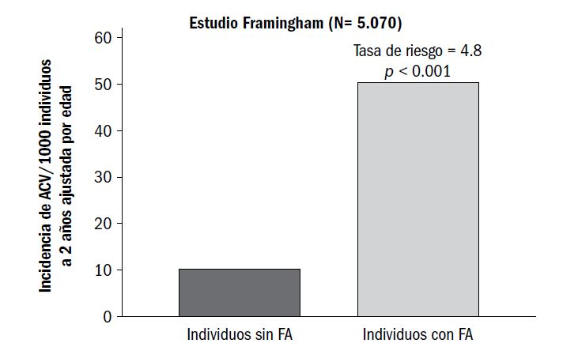

¿LA FIBRILACIÓN AURICULAR MODIFICA EL RIESGO
CARDIOVASCULAR?
4
La fibrilación auricular es la arritmia cardíaca más frecuente, con una incidencia que, al igual que
las demás enfermedades cardiovasculares, aumenta exponencialmente con la edad, comportamiento
que, dado el incremento de la población añosa a nivel mundial, explica su incidencia y
prevalencia en aumento. Las predicciones para las próximas décadas son muy elevadas, salvo que
las medidas de prevención logren desacelerar esta tendencia.
En el estudio ATRIA, que incluyó a 1.900.000 individuos en los Estados Unidos, la prevalencia
de fibrilación auricular ascendió de 0,1% en los menores de 55 años a 9% en los mayores de
80 años, comportamiento similar al resto de los estudios epidemiológicos. En el de Rotterdam,
otro estudio poblacional, la prevalencia ascendió de 1% en aquellos de 55 a 59 años hasta 18%
en los mayores de 85 años. El riesgo de desarrollar fibrilación auricular entre los 40 y los 95 años,
estimado durante 30 años en el estudio de Framingham, fue del 26% para los hombres y del 23%
para las mujeres.
La presencia de fibrilación auricular se asocia a mayor riesgo de eventos tromboembólicos, insuficiencia
cardíaca y mortalidad precoz, excepto para los infrecuentes casos de fibrilación auricular
aislada en personas jóvenes (FA lone), aunque este concepto han sido cuestionado al considerar
que no es una entidad única sino que se agrupan con ese nombre diferentes entidades.
La fibrilación auricular no valvular incrementa casi cinco veces el riesgo de sufrir un accidente cerebrovascular
(Figura 1), con independencia de que se trate de una forma paroxística, persistente
o permanente. El riesgo anual de accidente cerebrovascular oscila entre 4,5% y 13%, según las
comorbilidades. Cuando esta arritmia se asocia a una valvulopatía mitral reumática, el riesgo aumenta
17 veces, como fue reconocido hace más de 60 años.
Figura 1. Riesgo de accidente cerebrovascular.

Se estima que el 15% de todos los accidentes cerebrovasculares isquémicos se deben a una
fibrilación auricular, proporción que aumenta con la edad, asociándose, además, con otras localizaciones
de embolia arterial y con menor calidad de vida. La incidencia de accidente cerebrovascular
atribuible a fibrilación auricular aumenta de 1,5% en los individuos de 50 a 59 años al
23,5% (1 de cada 4) en aquellos de 80 a 89 años, lo que demuestra el papel progresivo con la
edad, no sólo por la mayor incidencia de fibrilación auricular, sino por el riesgo progresivamente
mayor que la edad confiere, como se aplica en la escala (score) CHA2VDS2-VASc. En los estudios
longitudinales se reconoció también una mayor incidencia de accidente cerebrovascular silente en
estos pacientes. Se propuso que esta arritmia originaría el 25% de los accidente cerebrovasculares
criptogenéticos.
La presencia de fibrilación auricular se ha asociado, además, a mayor deterioro de las funciones
cognitivas (OR 1,7; IC 95%: 1,2 a 2,5), duplicando el riesgo de demencia (OR 2,3; IC 95%: 1,4
a 3,7); incluso, se demostró que menores períodos en rango de anticoagulación terapéutico se
asociaron con compromiso cognitivo.
La relación entre fibrilación auricular e insuficiencia cardíaca se conoce de larga data; puede
desencadenar un cuadro clínico de novo, descompensar a un paciente con cardiopatía subyacente
y marcar un peor pronóstico. Hace más de 60 años, Philips y cols. señalaron que una fibrilación
auricular aguda podía producir un cuadro clínico de insuficiencia cardíaca congestiva en pacientes
sin cardiopatía subyacente, remitiendo luego de la reversión a ritmo sinusal o con control de la
frecuencia cardíaca, hallazgo ratificado luego por otros autores.
La presencia de fibrilación auricular también aumenta el riesgo de muerte prematura, habitualmente
de causa cardiovascular. El estudio de Framingham al cabo de un seguimiento de 40 años,
informó mayor riesgo de muerte para aquellos con fibrilación auricular y estimó un OR 1,5 (IC 95%:
1,2 a 1,8) para los hombres y 1,9 (IC 95%: 1,5 a 2,2) para las mujeres, asociación que persistió
luego de ajustar los resultados con otras variables biológicas y cardiovasculares potencialmente
relacionadas: edad, hipertensión arterial, diabetes, infarto de miocardio, valvulopatías, insuficiencia
cardíaca congestiva, accidente cerebrovascular y accidente isquémico transitorio. Otro hallazgo
importante de este estudio es que la fibrilación auricular aumentó el riesgo de muerte en todas las
edades, reduciéndose además la diferencia en la mejor expectativa de vida de la mujer respecto
del hombre, habitualmente mejor para la mujer.
La incidencia de fibrilación auricular en los pacientes con síndromes coronarios agudos se encuentra
en un 10 a 21%, y se incrementa aún más con la edad y la gravedad del infarto de miocardio.
Esto, a su vez, está asociado a un aumento de la mortalidad intrahospitalaria (25,3% con fibrilación
auricular y 16% sin ella, según datos del Servicio Nacional de Salud de los Estados Unidos) a
30 días (29,3% vs. 19,1%) y a un año (48,3% vs. 32,7%); si se considera un análisis multivariado,
sigue siendo un importante predictor independiente de mortalidad intrahospitalaria, a 30 días y a
un año. Cuando se considera la evolución intrahospitalaria de los pacientes, aquellos que desarrollan
fibrilación auricular durante la interacción de un síndrome coronario agudo presentan peor
pronóstico que los que ya la presentaban en el momento de la internación. La tasa de accidente
cerebrovascular isquémico es mayor en los pacientes con fibrilación auricular e infarto agudo de
miocardio que en aquellos con ritmo sinusal al ingresar (3,1% con fibrilación auricular contra 1,3%
para aquellos con ritmo sinusal).
CONCLUSIONES
La presencia de fibrilación auricular se asocia a un mayor riesgo de eventos tromboembólicos,
insuficiencia cardíaca y mortalidad, excepto para los infrecuentes casos de fibrilación auricular en
personas jóvenes. La fibrilación auricular constituye un predictor independiente de peor pronóstico
a largo plazo en los pacientes con síndromes coronarios agudos y modifica el riesgo cardiovascular.
LECTURAS RECOMENDADAS
Ball J, Carrington MJ, McMurray JJ, Stewart S. Atrial fibrillation: profile and burden of an evolving epidemic in the
21st century. Int J Cardiol 2013;67:1807.
Benjamin EJ, Wolf PA, D´Agostino RB, et al. Impact of atrial fibrillation on the risk of death: the Framingham Heart
Study. Circulation 1998;98:946-52.
Camm AJ, Lip GY, De Caterina R. 2012 focused update of the ESC Guidelines for the management of atrial fibrillation:
an update of the 2010 ESC Guidelines for the management of atrial fibrillation. Developed with the special
contribution of the European Heart Rhythm Association. Eur Heart J 2012;33:2719-47.
Cervera A, Amaro S, Obach V, Chamorro A. Prevention of ischemic stroke: antithrombotic therapy in cardiac
embolism. Curr Drug Targets 2007;8:824-31.
Chugh SS, Blackshear JL, Shen WK, et al. Epidemiology and natural history of atrial fibrillation: clinical implications.
J Am Coll Cardiol 2001;37:371.
Connolly SJ, Pogue J, Hart RG, et al. Effect of clopidogrel added to aspirin in patients with atrial fibrillation. N Engl
J Med 2009;360:2066-78.
Crenshaw BS, Ward SR, Granger CB, et al. Atrial fibrillation in the setting of acute myocardial infarction: the GUSTO-
I experience. Global Utilization of Streptokinase and TPA for Occluded Coronary Arteries. J Am Coll Cardiol
1997;30:406-13.
Dorian P, Paquette M, Newman D, et al. Quality of life improves with treatment in the Canadian Trial of Atrial
Fibrillation. Am Heart J 2002;27:143:984-90.
Fisher M. Ensuring the future of clinical and basic stroke research. Stroke 2014;45:2493-6.
Flaker GC, Pogue J, Yusuf S, Pfeffer MA, Goldhaber SZ, Granger CB, Anand IS, Hart R, Connolly SJ. Cognitive
function and anticoagulation control in patients with atrial fibrillation. Circ Cardiovasc Qual Outcomes
2010;3:277-83.
Go AS, Hylek EM, Phillips KA, et al. Prevalence of diagnosed atrial fibrillation in adults: national implications for
rhythm management and stroke prevention: the Anticoagulation and Risk Factors in Atrial Fibrillation (ATRIA)
Study. JAMA 2001;285:2370.
Grogan M, Smith HC, Gersh B, Wood D. Left ventricular dysfunction due to atrial fibrillation in patients initially
believed to have idiopathic dilated cardiomyopathy. Am J Cardiol 1992;69:1570-3.
Hart RG, Pearce LA, Rothbart RM, et al. Stroke with intermittent atrial fibrillation: incidence and predictors during
aspirin therapy. Stroke Prevention in Atrial Fibrillation Investigators. J Am Coll Cardiol 2000;35:183-7.
Heeringa J, van der Kuip DA, Hofman A, et al. Prevalence, incident and lifetime risk of atrial fibrillation: the Rotterdam
study. Eur Heart J 2006;27:949-53.
Honloser SH, Pajitnev D, Pogue J, et al. Incidence of stroke in paroxysmal versus sustained atrial fibrillation in
patients taking oral anticoagulation or combined antiplatelet therapy: an ACTIVE W Substudy. ACTIVE W Investigators.
J Am Coll Cardiol 2007;50:2156-61.
January CT, Wann LS, Alpert JS, Calkins H, Cleveland Jr JC, et al, 2014 AHA/ACC/HRS Guideline for the management
of patients with atrial fibrillation. J Am Coll Cardiol 2014. doi: 10.1016/j.jacc.2014.03.022.
Lip GY, Brechin CM, Lane DA. The global burden of atrial fibrillation and stroke: a systematic review of the epidemiology
of atrial fibrillation in regions outside North America and Europe. Chest 2012;142:1489.
Lloyd-Jones DM, Wang TJ, Leip EP, et al. Lifetime risk for development of atrial fibrillation. The Framingham Heart
Study. Circulation 2004;110:1042-146.
Luderitz B, Jung W. Quality of life in patients with atrial fibrillation. Arch Intern Med 2000;160:1749-57.
Mant J, Hobbs FD, Fletcher K, Roalfe A, Fitzmaurice D, Lip GY, et al. Warfarin versus aspirin for stroke prevention
in an elderly community population with atrial fibrillation (the Birmingham Atrial Fibrillation Treatment of the Aged
Study, BAFTA): a randomised controlled trial. Lancet 2007;370:493-503.
Ott A, Breteler MM, de Bruyne MC, van Harskamp F, Grobbee DE, Hofman A. Atrial fibrillation and dementia in a
population-based study: the Rotterdam Study. Stroke 1997;28:316-21.
Patel NJ, Deshmukh A, Pant S, et al. Contemporary trends of hospitalization for atrial fibrillation in the United
States, 2000 through 2010: implications for healthcare planning. Circulation 2014;129:2371.
Peters KG, Kienzle MG. Severe cardiomyopathy due to chronic rapidly conducted atrial fibrillation: complete recovery
after restoration of sinus rhythm. Am J Med 1988;85:242-4.
Petersen P. Thromboembolic complications in atrial fibrillation. Stroke 1990;21:4-13.
Philips E, Levine SA. Auricular fibrillation without other evidence of heart disease: a cause of reversible heart
failure. Am J Med 1949;7:479-89.
Rathore SS, Berger AK, Weinfurt KP, et al. Acute myocardial infarction complicated by atrial fibrillation in the
elderly: prevalence and outcomes. Circulation 2000;101:969-74.
Risk factors for stroke and efficacy of antithrombotic therapy in atrial fibrillation. Analysis of pooled data from five
randomized controlled trials. Arch Intern Med 1994;154:1449.
The Boston Area Anticoagulation Trial for Atrial Fibrillation Investigators. The effect of low-dose warfarin on the
risk of stroke in patients with nonrheumatic atrial fibrillation. N Engl J Med 1990;323:1505.
Wolf PA, Abbott RD, Kannel WB. Atrial fibrillation as an independent risk factor for stroke: the Framingham Study.
Stroke 1991;22:983-8.
You JJ, Singer DE, Howard PA, et al. Antithrombotic therapy for atrial fibrillation: Antithrombotic Therapy and
Prevention of Thrombosis, 9.th ed: American College of Chest Physicians Evidence-Based Clinical Practice Guidelines.
Chest 2012;141(2 Suppl):e531S-75S.